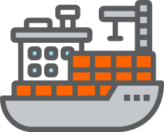
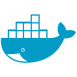
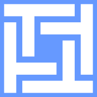

Tabs und Titel eingebaut

dockhand.md📄Notizen.md
Dockhand
Gleiches Icon aus dem Mapping in Tableiste und Titel, abschaltbar pro Bereich in den Einstellungen.

dockhand.mdGleiches Icon aus dem Mapping in Tableiste und Titel, abschaltbar pro Bereich in den Einstellungen.
Gilt nur für diese Notiz und gewinnt gegen Mapping und Regeln. Leeres Feld entfernt das Icon wieder.

devicon/dockerRegeln greifen vor dem Mapping, per Hand gesetzte Icons bleiben bestehen.
Pro Referenz zwei Dateien oder ein Stil Schalter, das Plugin wählt je nach Theme. Marken bleiben unberührt.
Eigenschaften icon und iconColor werden bekannt gemacht und schlagen Katalog Namen vor.
Start leer, jede Zeile öffnet den bekannten Picker mit Farbe und Größe. Gilt als Rückfall nach Pfad und Frontmatter.
Läuft automatisch bei Als Datei speichern, Original bleibt im Cache.
Der Befehl fragt erst nach der Endung ohne Punkt und öffnet dann den Picker. Eine Zeile weniger Pflege als die Liste, dafür kein Überblick auf einen Blick. Als Ergänzung zu Variante A möglich.

selfhosted/technitium lädt beim Wählen nach ⭳Voller Katalog aus index.json mit Tags und hellen Varianten, Stand Anzeige plus Neu laden in den Einstellungen.